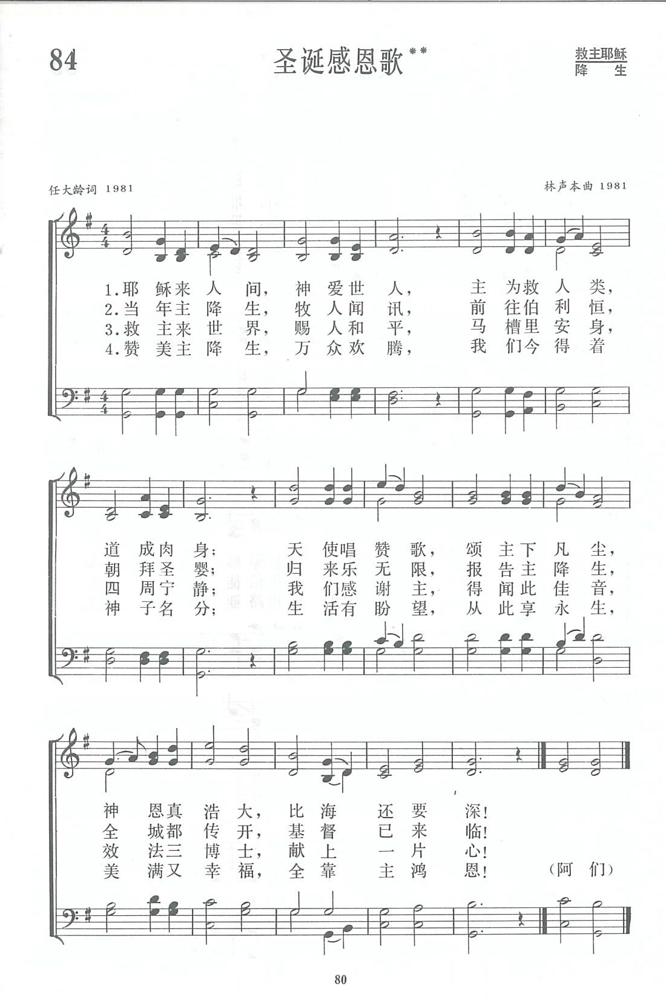

|
|
第84首 圣诞感恩歌 |
|
|
耶穌来人间，神爱世人 |
|
https://www.zanmeishige.com/tab/13715.html?songbook=1&index=84
 |
|
|
|
|

https://youtu.be/r25covE7OX8
第84首 圣诞感恩歌** _林声本 Jesus our Saviour, Word Incarnate
经文：“使他荣耀的恩典得着称赞。这恩典是他在爱子里所赐给我们的”(弗1：6)。
1981年秋，《新编》已开始征集创作诗歌。圣诗小组的林声本牧师(简历参阅第47首)见到了多年从事教会文字工作的任大龄同工，便鼓励他动笔，并提到圣诞节诗歌虽已不少，内容大多是歌颂赞美，能倾吐感恩之意的似乎不多。任大龄点头称是。于是商定合作一首，由任大龄作词，林声本谱曲。
半个月后，任大龄交出这首《圣诞感恩歌》的歌词。林声本阅后很愿意谱曲，可是一时似乎没有充足的灵感。一天傍晚，林声本坐到钢琴旁，展开这首诗，边读边默想，忽有音乐自心涌出，恍如天降：
他迅速记下，随即在钢琴上用和声弹出全曲。过不多久，家人齐集拢来准备吃晚饭，听到了这首新诗，也各就各位以四声部合唱起来，大家心里都充满了欢欣。
当年圣诞节，上海基督教的教牧同工共庆圣诞佳节。在茶话会上，圣诗小组的四位同工唱了这首新创作。上海景灵堂的唱诗班也在圣诞音乐崇拜中献唱这首诗，受到了同工和信徒的欢迎。后来，上海国际礼拜堂的唱诗班指挥古鸿嗣同道又把它改编成唱诗班合唱曲，加上风琴独奏的段落。中国基督教协会制作的《圣诞诗歌百人合唱》录音带中，就采用了他的改编曲。
任大龄生于19O7年，约在1924年信主，毕业于沪江大学神学院。他爱写诗文，多年在浸会书局任编辑，曾任上海基督教三自爱国运动委员会委员，上海闸北堂的堂务委员。《新编》内第174首《献堂感恩歌》也是他的作品。任大龄已于l987年蒙召归天。
任大龄谈到他写这首诗时，主要的思考是：“主耶稣降世来拯救我们，包括我们整个的生活，即灵性生活和物质生活。过去有人强调世界是痛苦的，基督徒只要追求天国就够了。其实神要我们在天上有美满的生活，在地上也有美满的生活，二者是不可分割的。”
这首诗共四节，内容除了描述耶稣降世、牧人闻讯、博士献礼等以外，突出对神的恩典的领会与感谢。特别是第四节的结尾“生活有盼望，从此享永生，美满又幸福，全靠主鸿恩”，富于热爱生活的气息。
曲调的进行，是按歌词的内容，意境逐渐铺开。前两句平稳幽静，悠然从容。第3句引吭高歌，似与天使一同唱和赞主降生。最吸引入的是第4句。音调先是从低到高：
“神恩真浩大”稳在高音处说明神的恩典何等浩瀚。然后徊峰一转：
“比海还要深”这个结束安舒、深沉，不仅表达出神恩无限，其深度难以描述；也表示我们的感恩之心要进入更加完全的地步。歌声虽止，意犹未尽。